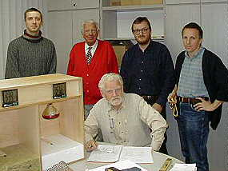

Feuchte/Salz?
Feuchte/Salz?
 Heizung?
Heizung?
 Fenster schwitzen?
Fenster schwitzen?
 Schimmelpilz wuchert?
Schimmelpilz wuchert?
Dämmstoffe im Rotlicht - Das Lichtenfelser Experiment
Der Wärmeeintrag in Dach und Wand sowie der Wärmetransport erfolgen durch Wärmeleitung und Strahlung. Die Bestimmung der Wärmeleitfähigkeit von Baustoffen im Labor erfolgt unter stationären Verhältnissen (vgl. u. Normzitate Messaufbau und Prüfverfahren). Die unterschiedliche Anheizzeit und Wärmeenergie, die vor dem Messbeginn in die zu prüfenden Baustoffe eingespeist wird, bleiben dabei unberücksichtigt (vgl. u. Gösele/Schüle). Ebenso unterschlagen bleiben dabei die Temperaturwechsel mit Erwärmung und Abkühlung infolge des Tag-und-Nachtrhytmus. Der mit den demzufolge rein fiktiven Laborwerten berechnete Wärmebedarf stimmt nirgends mit der Praxis überein und weicht meist gravierend von den genormten Annahmen ab. Es besteht ein erheblicher Nachholbedarf bei der Baustoffprüfung nach den Anforderungen der Praxis. Deshalb ermittelte ein Forscherteam - cand. Ing. Henryk Parsiegla, Magdeburg, Bausachverständiger Rolf Köneke +, Hamburg, Dipl.-Ing. Konrad Fischer, Hochstadt a. Main, Frank Lipfert, Lichtenfels und Prof. Dr.-Ing. habil. Claus Meier, Nürnberg mit einer Versuchs- und Meßeinrichtung Frank Lipferts in Lichtenfels die tatsächliche Qualität verschiedener Dämmstoffe anhand ihrer Temperaturveränderungen bei einseitiger Wärmebestrahlung.
Versuchsablauf
Ein Wärmestrahler (150 W Infrarotlampe) mit gleichbleibender Entfernung und konstanter Strahlungsdauer von 10 Minuten bewirkt für unterschiedliche Baustoffplatten in 4 cm Tiefe (Unterseite Platte) unterschiedliche Temperaturerhöhungen. Daraus ergeben sich Rückschlüsse auf die Thermostabilität und Dämmwirkung der Baustoffe. Die geringfügig abweichenden Ausgangstemperaturen entstanden aus der meßbedingt leicht ansteigenden Umgebungstemperatur. Bei allen Messungen wurde die gleiche Meßkammer mit Polystyrol-Untergrund verwendet. Auf Beschichtung der Versuchskörper, höhere Dicken oder verlängerte Bestrahlungsdauer sowie Simulation von einseitigen Minusgraden wurde bewußt verzichtet. Es kommt ja darauf an, mit geringem Versuchsaufwand und in kurzer Zeit die baustofftypischen Eigenschaften experimentell zu bestimmen. Und genau das kann diese von Prof. Paul Szabo, Dortmund, konfigurierte Meßeinrichtung bestens leisten.
Ergebnis:
| Baustoff | Wärme- leitzahl lambda W/mK |
Wärme- durchgangs- koeffizient k-bzw. U-Wert W/m2K |
Anfangs- temperatur |
Endtempera- tur nach 10 Minuten Bestrahlung |
Temperatur- entwicklung auf Unterseite |
Endtempera- tur auf Oberseite |
| Mineralwolle | 0,04 | 0,85 | 21,4 °C | 59,8 °C | + 38,4 °C | 173 °C |
| Polystyrol | 0,04 | 0,85 | 21,4 °C | 35,4 °C | + 13,6 °C | 72 °C |
| Schaumglas | 0,04 | 0,85 | 20,5 °C | 30,8 °C | + 10,3 °C | |
| Vollziegel | 0,98 | 4,74 | 20,9 °C | 23,4 °C | + 2,5 °C | 57 °C |
| Holzweichfaser | 0,04 | 0,85 | 21,4 °C | 22,2 °C | + 0,8 °C | 100 °C |
| Gipskarton | 0,21 | 2,77 | 22,5 °C | 23,0 °C | + 0,5 °C | |
| Fichte | 0,13 | 2,09 | 20,6 °C | 20,6 °C | +/- 0 °C | 82 °C |

Anfangs- und Endtemperatur der Baustoffrückseite nach 10 Minuten Bestrahlung
(alle Temperaturen auf Start 20 oC zurückgerechnet)

Der Versuchsaufbau (vorne links) und die Autoren:
(stehend v. l.) cand. Ing. Henryk Parsiegla, Bausachverständiger
Rolf Köneke +, Dipl.-Ing. Konrad Fischer, Frank Lipfert,
sitzend: Prof. Dr.-Ing. habil. Claus Meier.
Versuchs- und Meßeinrichtung: Frank Lipfert, Lichtenfels.
Die beste Wirkung gegen Temperaturveränderungen und Energiedurchfluß zeigen die Baustoffe aus Holz und Ziegel, trotz ihrer teils absurd "schlechten" Wärmeleitzahlen bzw. U-Werte (vormals k-Werte).
Mineralwolle, Polystyrol und Schaumglas liefern mit "guter" Wärmeleitzahl und Super-U-Wert dazu gegenteilige Ergebnisse. Auch deren maximale Oberflächentemperaturen auf der bestrahlten Seite sind mit über 70 (Polystyrol), 125 (Schaumglas) und 180 °C (Mineralwolle) erstaunlich hoch. So kann im Sommer - Sonnenstrahlung von außen - Barackenklima entstehen, die dann notwendige Kühlung verbraucht Energie. Im Winter - Heizung von innen, "verschlucken"/absorbieren die Leichtbaustoffe zwar mangels Speicherfähigkeit deutlich weniger Heizenergie als massive Baustoffe. Andererseits setzen die künstlichen Leichtbaustoffe den Temperaturveränderungen wenig entgegen, verschatten bzw. vermindern aber die tägliche Solarzustrahlung in die speicherfähige Massivfassade. Die geringste Temperaturerhöhung unter den künstlichen Isolierstoffen zeigte das Schaumglas, das im praktischen Dauereinsatz am Bau auch formstabil bleibt und im Unterschied zu den anderen kein Wasser aufnehmen kann (Problem der "absaufenden Dämmstoffe" an feuchtebelasteten Bauteilen).
Im Winterhalbjahr kann die flach einfallende Solarstrahlung vor allem in der Übergangszeit die Temperatur der sonnenbeschienenen Fassadenoberfläche deutlich erhöhen und bei massiven Bauteilen zu Speichergewinnen führen. Das vermindert den Energieabfluß von innen und verringert den Wärmeverlust. Sobald - abhängig von der Speicherdicke der Wand, der Zustrahlungsintensität und -menge - die eingespeicherte Solarenergie ausreichend in die Nacht "hinübergerettet" wird, spart das Heizenergie gegenüber dem speicherlosen Dämmstoffbau. Die Strahlungsintensität der Sonne liegt in der Heizperiode je nach Himmelsrichtung und Sonnenhöhe etwa zwischen 10 und 45% der Maximalwerte im Juli. Speicherfähige Baustoffe verwerten diese kostenlose Energiezustrahlung am besten. Dies hat auch eine Untersuchung am Fraunhofer-Institut für Bauphysik ergeben, bei der der Energieverbrauch von Versuchsräumen mit unterschiedlichen U-Werten der Außenwand während einer Winterperiode untersucht wurde. Der Raum mit dem "schlechten" U-Wert verbraucht insgesamt weniger Heizenergie: (Grafik Fischer nach vorliegenden Grafik-Daten des IBP - weitere Erläuterung):

Die Praxis am Bau belegt das Meßergebnis des Lichtenfelser Experiments:
Nur der speicherfähige Massivbau garantiert hohe Temperaturamplitudendämpfung und Phasenverschiebung beim "Durchschlagen" einseitiger Temperaturänderungen auf die andere Seite. Genau das spart Heiz- und Kühlenergie. Auch der von Bossert und Fehrenberg analysierte Heizenergieverbrauch unterschiedlicher Baukonstruktionen belegt das geringe und von der U-Wert-Berechnung dramatisch abweichende Sparpotential der Leichtbauweise. Außerdem durchfeuchten, veralgen, verschmutzen und zerreißen die angeblichen Dämmfassaden durch Temperaturbeanspruchung, schnelle Auskühlung und Kondensatbelastung. Das amtlich geforderte Dämmen und Dichten rechnet sich für den Bauherrn nie und ist krankheitsfördernd (Link Gesundheitsrisiken durch Dämmstoff). Demgegenüber verhalten sich Massivbauten wesentlich günstiger als berechnet und bleiben dauerhaft schadensfrei.
Zur Erinnerung:  - die grün abgesoffene Dämmstofflösung. Das soll Energie sparen?
- die grün abgesoffene Dämmstofflösung. Das soll Energie sparen?
|
Damit gehört der Dämmschwindel in die selbe Rubrik wie Wirklich lustig, wie leicht das tumbe Volk auszunehmen ist - sogar Weihnachtsgänse leisten mehr Widerstand, oder? |
Und:
Im Standardwerk der Bauphysik "Schall, Wärme, Feuchte", Bauverlag Wiesbaden Berlin 1985, verfaßt von Karl Gösele, langjähriger und seriöser Leiter des Instituts für Bauphysik in Stuttgart, und Schüle, Abteilungsleiter im Institut, wird im Kapitel "Instationäre Verhältnisse" unterschieden zwischen
der Wärmeleitfähigkeit λ (lambda) und der
Temperaturleitfähigkeit a,
die neben der Wärmeleitfähigkeit lambda eben auch die spezifische Wärmekapazität c und das Raumgewicht ρ (rho) enthält. Zur Erläuterung der Temperaturleitfähigkeit ist dort zu lesen:
"Eine Temperaturänderung pflanzt sich in einem Stoff umso schneller fort, je größer der Wert a ist".
Dies ist der entscheidende Punkt, der zu den obigen Meßergebnissen führt. Deshalb findet man bei Gösele/Schüle auch den Satz:
"Beim Anheizen oder Auskühlen von Räumen oder bei Sonnenzustrahlung zu einem Bauteil, schnellen
Änderungen der Lufttemperaturen zu beiden Seiten von Bauteilen usw. treten Temperaturänderungen und
Änderungen von Wärmeströmen auf, die durch die Werte 1/λ (Wärmedurchlaßwiderstand)
und k (Wärmedurchgangskoeffizient) nicht erfaßt werden können.
In diesen Fällen spielt das Wärmespeichervermögen der Stoffe und Bauteile im Zusammenhang mit der
Zeit die entscheidende Rolle".
Da haben wir es: Seit ewig weiß die Wissenschaft Bescheid. Im Klartext: Massivbaustoffe an der
Außenhülle sind perfekte Solarabsorber. Ihre Absorption des eingestrahlten Sonnenlichts = Solarenergie vom
UV-IR-Bereich als elektromagnetische Wellen, egal ob aus direkter (Ost-, Süd-, West-Fassade) oder diffuser
(Nordseite) Lichstrahlung /Sonnenlich-Einstrahlung spart Heizenergie, verkürzt die Heizperiode und steht als kostenlose Wärmequelle
dem Haus zur freien Verfügung. Das wollen Sie nicht glauben?
Dann lesen Sie Genaueres: Die passende Lektüre für eine umfassende und kontroverse Aufklärung rund um den offiziellen Bauphysik-Beschiß:
Prof. Dr.-Ing. habil. Claus Meier: Richtig bauen. Bauphysik im Widerstreit + Mythos Bauphysik ==>
Oder messen Sie einfach mal selbst mit einem handelsüblichen IR-Thermometer die tägliche Wärmeaufnahme und
nächtliche -abgabe anhand der Oberflächentemperatur ihrer vier Hausfassaden. Vorhergesagtes Resultat: Die
aufgenommene Wärme geht nicht komplett verloren, die Wandtemperatur - auch an der Nordseite! - bleibt bei ausreichender
Speicherfähigkeit immer höher als die Lufttemperatur. Gaaanz im Unterschied zu leichtgewichtigen
Dämmfassaden. Trick-Thermographien zeigen dann früh mollig warme Massivwände und eisige
Dämmflächen. Tipp: Lassen Sie die Thermographie mittags anfertigen, dann ist die Dämmfassade heiß
und die Massivwand kühler. Diese simplen Wahrheiten werden profimäßig unterschlagen - zum Wohle der
Dämmstoffbranche und Fertighausbauer! Und da logischerweise maximal speicherfähige Massivbaustoffe auch
mehr Solarenergie absorbieren können, spricht das ebenso gegen alle Baustoffverschlechterungen, die die
Massivaufbläher (Porenziegel, Porenbeton, Gasbeton, Schaumbeton, Bläh-Baustoffe), Zerfaserer und
Gespinsthersteller (Steinwolle, Weichholzfaserplatten) den unschuldigen Massivbaustoffen Ziegel, Beton und Holz
angedeihen lassen. Neben der Durchstrahlung mag auch die Warmluftkonvektion in den mehr oder weniger luftigen/porigen
Baustoffen als Transportmechanismus der Wärme durch den Baustoff eine gewisse Rolle spielen. Diese vom
Strahlungsanteil exakt zu unterscheiden, dürfte eine gewisse meßtechnische Herausforderung sein ...
Das k-wertige Fraunhofer-Institut bekommt bei seinen "modernen" Messungen für die desorientierte Ziegelindustrie nun heraus, daß sonnenbeschienene Südwände energetisch schlechter sind, als schattige Nordwände. Die Tatsachen am Bau werden also bis zum letzten Winkel ausgeblendet, um Falschkonstruktionen zu puschen. So wird sogar ein k zum U.
Daß der sog. Wärmedurchlaßwiderstand von Bauteilen (Term: 1/Λ), aus der der Wärmedurchgangskoeffizient k(DIN)- bzw. U(ISO)-Wert abgeleitet wird, baupraktisch eine wenig zuverlässige Rechengröße ist, geht schon aus deren genormter Ermittlung gem. DIN 52611 hervor. Zitat:
"3.1 Allgemeines
Während der Messung befindet sich die Probe zwischen zwei Kammern mit unterschiedlichen Temperaturen [gemeint: Lufttemperaturen].
In der Regel beträgt die Temperatur in der einen Kammer 20 oC,
in der anderen 0 oC, so daß sich in der Probe eine Mitteltemperatur von 10 oC
im stationären Zustand einstellt. Zur Bestimmung des Wärmedurchlaßwiderstands 1/Λ werden die
Temperaturen auf den beiden Oberflächen der Probe und die Wärmestromdichte q gemessen. ... Der
Wärmedurchgangskoeffizient wird [alternativ] ... aus der Differenz der Lufttemperaturen zu beiden Seiten der Probe
und der mittleren Wärmestromdichte in der Probe bestimmt."
Demnach wird in einer genormten "Versuchsdurchführung" ein "geregelter Heizkasten" in einem "Schutzraum" an den "Probekörper" (Mindestgröße 1x1 m, Regelgröße 1,5x1,5 m) angebracht, in dem mittels elektrischem Heizdraht als "Heizquelle" die Innenluft in "örtlicher und zeitlicher Konstanz" erwärmt wird. Bei "Proben mit grobporöser Oberfläche sind deren Oberflächen mit einer möglichst dünnen Schicht eben und glatt abzugleichen. Zur Vermeidung einer Luftströmung durch die Probe sind die Oberflächen entsprechend abzudichten." Normgemäß müssen gem. 4.1.3 "alle wärmeerzeugenden Einbauten im Heizkasten wie Heizkörper (Heizquelle), Ventilatoren usw. gegen die Probenoberfläche und die Heizkastenwände strahlungsgeschützt sein. Die Heizquelle muß eine gleichmäßige Erwärmung der Luft (örtliche und zeitliche Konstanz) gewährleisten." und gem. 4.4.1 "Die (Temperatur-) Meßfühler müssen vor störenden Strahlungseinflüssen geschützt werden." Alle Temperaturen müssen sich nun laborgemäß stationär einstellen, dazu 6.2: "Der stationäre Zustand ist ... erreicht, wenn sich die Meßwerte innerhalb von 3 Stunden nicht stetig und um nicht mehr als 1 % ändern." Dann ist der Zustand erreicht, wo es keine wetter- und heizungsbedingte Aufwärmung und Abkühlung mehr gibt, die Baurealität ist verlassen. Die DIN EN ISO 8990 konkretisiert weiter in "1.5.1: ... Wärmeaustausch an den Oberflächen des Probekörpers erfolgt sowohl durch Konvektion als auch durch Strahlung. Erstere hängt von der Lufttemperatur und der Luftgeschwindigkeit und letztere von den Temperaturen und den hemisphärischen Gesamtstrahlungsaustauschgraden der Probekörperoberflächen und von der Oberfläche des Probekörpers aus "gesehenen" Oberflächen ab. Die Wirkungen der Wärmeübertragung durch Konvektion und Strahlung sind in dem Konzept der "Umgebungstemperatur" und dem Wärmeübergangskoeffizienten vereinigt. ..."
Dabei werden durch die Bauart der Prüfkammer und ihrer Teile der Meßeinrichtung die Einflüsse der Wärmestrahlung auf den Probekörper möglichst sytematisch verringert bzw. - betreffend der baupraktisch gegebenen Solarzustrahlung ganz ausgeschaltet. Die Zuführung der Wärmeenergie auf konvektivem Wege mittels erwärmter Kastenluft wird geradezu erzwungen, dazu werden sogar Ventilatoren eingesetzt. Insgesamt kommt - und das zeigen Ergebnisse der Baupraxis - der massivbautypische Solar-Einspeicherungs-Effekt gegenüber der Konvektion gar zu schlecht weg.
Wir betrachten die Energieaufnahme im Baustoff etwas genauer:
Daß bei einem Massivbaustoff gigantisch viele dicht gepackte Moleküle bereitstehen, um von den
auftreffenden energetisch aufgeladenen und sich entsprechend schnell (im Sinne der Brownschen Molekularbewegung)
bewegenden Luftmolekülen Bewegungsenergie = Temperatur abzunehmen (im Sinne der "Wärmeleitung") und sich aber
dabei viel weniger schnell erwärmen, ist klar. Entsprechend nehmen bei Leichtbaustoffen viel weniger
Oberflächenmoleküle den Warmluftmolekülen die Energie ab und erwärmen die Leichtbauoberfläche
und die Raumtemperatur beim Aufheizen deswegen viel schneller. Vom Handauflegen auf dichte oder schüttere Stoffe gleicher
Temperatur kennt jeder den Oberflächeneffekt. Der Folgeeffekt bei überhöhter Luftfeuchte: Kondensat und
Verschmutzung, gar Schimmel an - wegen langsamerer Erwärmung
kühleren - Massivbaukörpern im Umfeld von - wegen schnellerer Erwärmung wärmeren - Leichtbaustoffen (z.B. Stahlbetonstütze zwischen
porosiertem Mauerwerk, Putz an Scheingewölben auf Holzlattung mit Abzeichnung der Latten, Abzeichnung von
Mörtelfugennetz in geringer dichtem Mauersteinumfeld, ...). Und demzufolge grenzt es an totale Mißachtung
der Realität, wenn von "berufener" Seite bei lokalem Schimmelbefall und/oder Verschmutzung an speicherfähigeren
Bauteilen nach einer Wärmedämmung der Außenhaut gerufen wird, vielleicht sogar - gräßlich! -
von Sachverständigen empfohlen. Der gerade bei speicherfähigen Baustoffen hohe Anteil an
vereinnahmter Wärme aus Solarenergie und Umgebungsstrahlung wird so verringert, das Urproblem besteht weiter.
Deswegen werden innenseits Schimmelgifte eingesetzt, um dann trotz hoher Feuchte vorzutäuschen, daß die
Dämmung was gebracht hätte. Worauf es tatsächlich ankäme, wäre dagegen eine Reduzierung der
Raumluftfeuchte, um die überhöhte Kondensation auszuschließen. Uropas Fenster leisteten die erforderliche
Trockenhaltung der Baukonstruktion ohne bauphysikalische Verwissenschaftlichung durch Sollkondensation überhöhter
Raumluftfeuchte am Einfachglas sowie die Trockenluftzufuhr durch die geringe, aber meist vollkommen ausreichende
Fugendurchlässigkeit.
So weit, so gut. Schüttere und trockene Leichtbaustoffe werden also schneller erwärmt und
durchtemperiert als Massivbaustoffe und / oder feuchte Leichtbaustoffe, wobei wegen der unterschiedlichen
Oberflächendichte die erwärmte Luft in leichte Stoffe weniger Energie für die gleiche
Oberflächentemperatur reinpacken wird, als in dichte Massivbaustoffe gleicher Oberflächenstruktur betr.
Rauheit/Glätte. Wir wissen das von der Berührung unserer Haut mit beispielsweise einer hölzernen
Tischplatte und ggf. einem Tischtuch darauf und den Tischbeinen aus Metall, die ja beide gleich warm sind - eben Raumtemperatur 20 Grad.
Mit der Praxis hat das Norm-Gemesse alles nur bedingt zu tun: Die unter zu geringem Einfluß der baupraktisch
wesentlichen solaren und instationären Wärmezustrahlung "gewonnenen" λ- k- bzw. U-Werte korrespondieren
leider gar nicht mit den baupraktischen Werten der Temperaturamplitudendämpfung und Phasenverschiebung für das
Durchschlagen einseitiger Temperaturveränderungen. Und in einem Baustoff wird Wärme auch über
elektromagnetische Strahlung/Schwingung transportiert:
http://lexikon.freenet.de/Phonon: "Sind [in einem Festkörper] die gegenphasig schwingenden Atome geladen, so existieren Schwingungsmoden, bei denen entgegengesetzt geladene Untergitter gegeneinander schwingen. Die dabei oszillierenden Dipolmomente können mit Photonen wechselwirken. Solche Kopplungen finden in der Regel im Infrarotbereich statt, also bei Wärmebewegungen innerhalb von Festkörpern. Man nennt solche Kristalle dann infrarot-aktiv. Beispiele für solche Gitter sind Ionengitter, zum Beispiel in Kochsalzkristallen. ... Das Modell der Gitterschwingungen setzt eine kristalline Ordnung des Festkörpers voraus. Auch amorphe, also nicht kristallin geordnete Festkörper wie Gläser zeigen Schwingungen der Elementarteilchen untereinander, man bezeichnet diese aber nicht als Phononen."
Wie sieht nun die Situation in einem geheizten Raum wirklich aus? 20 qm mit 2,5 m Raumhöhe haben 50 cbm beheiztes Luftvolumen. Das sind (1 cbm Luft wiegt ca. 1,25 Kilogramm) also 62,5 Kilogramm Heißluft. Die sind mit wenig Energie schnell von 0 auf 20 Grad Raumlufttemperatur erwärmt. Was gibt aber nun ebenfalls Wärme aus dem Raum an die abkühlende Außenwand ab? Ich weiß schon - der Mensch (99 % der Antworten) und die elektrischen Verbraucher wie Computer und Lampen (ca. 1 % der Antworten).
Doch Obacht! Was ist eigentlich mit den Wänden und Decken? Sechs Raumumschließungsflächen mit (unter Freunden geschätzt) 10 cm mitgeheizter Materialstärke und z. B. 1000er Rohdichte je cbm wiegen bei 5 x 4 m Raumzuschnitt: (5 + 4 x 2 x 2,5 (Wandflächen) + 5 x 4 x 2 (Wand- + Bodenfläche)) x 0,1 (Konstruktionsstärke) x 1000 (Rohdichte) = 8.500 Kilogramm Gewicht, also 8,5 Tonnen! Luft- zu Bauteilgewicht stehen wie 1:136 zueinander, das Luftgewicht ist also weniger als 1 %, das Bauteilgewicht über 99 %. Das Bauteilgewicht ist nun erst mal von 0 auf 20 Grad aufzuwärmen, das verschlingt haufenweise Energie. Vor allem über den Umweg Warmluftkonvektionsheizung, Boden- oder Wandheizung anstelle effektiverer Strahlungsheizung. Wobei ein guter Teil der Heißluft ungenutzt abhaut (Lüftungswärmeverluste nach bauphysikalisch exakter Begrifflichkeit) oder bei eingebauten Heizschlangen in Boden und/oder Wand sinnlos die Bauwerksmasse in Bewegung versetzt, bevor die Wärme dem Raumnutzer zur Verfügung steht.
Zusätzlich nehmen die Wände auch aus der Sonne und bei bedecktem oder selbstverständlich auch
Nordhimmel aus diffusem Licht je nach Sonnenstand und Himmelsbedeckung mehr oder weniger Energie auf, die bei hoher
Speicherfähigkeit und Rohdichte auch am besten und längsten eingespeichert wird und den raumseitigen
Zuheizbedarf entsprechend mindert. Meßbar von jedermann auf jeder Nordwand z.B. mit IR-Thermometer nach Sonnenaufgang.
Die optimale Wandstärke der Holzblockhäuser in Grindelwald (Schweiz) auf etwa 1000 m über
Meeresspiegel ist seit ca. 300 Jahren nachweisbarer Bautradition bei ca. 9 cm. Brennholzgewinnung war bei den
Bergbauern übrigens mit Lebensgefahr und viel Arbeit verbunden - vom Bergwald am Steilhang bis zum Kleingehacktem
im Chachelöfli. Die fränkischen Fachwerkhäuser haben ca. 12 - 18 cm Wandstärke. Mehr Wand braucht
nur das unarmierte Mauerwerk aus Steinen und Brocken - aus statischen Gründen! Die gigantische Temperaturamplitudendämpfung romanischer Bergfriedmauern
und die Temperaturstabilität massiver Brauereikeller wollen wir hier bewußt nicht als Superstandard
vorschlagen.
Insofern ergibt sich als logischer Schluß, daß jegliche Art von nachträglicher
Zusatzdämmung außen am massiv gemauerten, ausgefachten oder ausgebohltem Altbauwändli - sei es nun
Superbiolehmstrohpampe oder auch Ökoindustriekalksandgeplättel energietechnisch
unwirtschaftlich ist und eher Folgeschäden durch schlechtere Fassadenaustrocknung nach Beregnung und Betauung,
aber auch - im Fall Innendämmung - wegen Kondensatfalle in der innenseitigen Wandschichtung bedingt. Nicht nur am
Baudenkmal. Doch weiter zu unserem Rechenbeispiel, wie sieht es nun wärmetechnisch aus, wenn unsere
speicherfähigen Bauteile endlich auf 20 Grad erwärmt sind?
Jetzt kommts! Die Massivwände strahlen nun ihre durch Heizung aufgenommene Wärmestrahlung mit z. B. 20 °Celsius an der Oberfläche auf die Außenwand ab. Die von Luft und Bauteil aufgenommene Energiemengen, die dann natürlich bei Abkühlung wieder abgegeben werden können, stehen ebenfalls im Verhältnis 1:136. Aha. Kühlt nun die 20grädige Luft ab auf 0 °C, braucht das 25 Minuten. Und der Baustoff mit 20 °C? Nicht 25 Stunden, sondern sage und schreibe 56 Stunden. Und deswegen kühlen gut speicherfähige, also ausreichend dicke Massivwände auch die ganze Nacht über mit ihrer Oberflächentemperatur so gut wie nicht unter die Außenlufttemperatur ab - auch im bittersten Winter. Das verhindert die Einkondensation aus nächtlich abkühlender Außenluft - nicht aber Feuchtestau aus Regen in zementären Putzen hoher Wasserrückhaltung und unter allen kapillarblockierenden Synthetik-Anstrichen, und seien sie noch so dampfdiffusionsoffen. 1000:1 funktioniert der Feuchtetransport in Baustoffen ja kapillarförmig gegenüber der Dampfdiffusion.
Was also ist nun maßgeblicher - das Verhalten des Baustoffs im Labor oder draußen in der sonnigen Wirklichkeit? Also ein diffuser k-Wert, der die Vermarktung von Leichtbaustoffen und Pappendeckelbuden fördert, oder eine praxisnahe wärmestrahlungsberücksichtigende Speicherkomponente, die über Absorption, Emission und Reflexion etwas aussagen sollte (und die es so nicht gibt/geben darf?)? Der Meiersche Ueff-Wert für Speicherbaustoffe und auch Fenster kann jedenfalls einen rechnerischen Wärmebedarfswert liefern, der mit dem wahren Energieverbrauch gut korrespondiert (aktuell nachgewiesen in unserem Projekt Schloß Veitshöchheim, Hüllflächentemperierung). Aber kein Argument für Zusatzdämmung liefert.
Hier ein weiterführender Fachtext von Prof. Meier: Wärmeversorgungssicherheit und Temperaturstabilität eines Raumes
Temperaturleitung!
Da bei dem Lichtenfelser Experiment lediglich Temperaturen und die unterschiedlichen Temperaturveränderungen beim Aufheizvorgang gemessen wurden, kommt unter der hypothetischen Annahme von "Leitung" ausschließlich die Temperaturleitfähigkeit zum Tragen - also auch die Speicherkomponenten c und rho. Es ist einleuchtend, daß bei der Erwärmung eines Materials die vorhandene Speicherkapazität eine Rolle spielen muß. Speicherfähiges Material schluckt bei einer Temperaturerhöhung zunächst einmal Wärme weg (Absorption, ergänzt durch damit verbundene Wärmeabgabe - Emission und Reflektion), ehe nachfolgende Wärme weitergegeben und damit die Temperatur angehoben wird. So kommt es, daß speicherfähiges Material (Holz, Holzfaserplatte und Ziegel) langsamere Temperaturveränderungen, dagegen nichtspeicherfähiges Material (Mineralwolle und Polystyrol) schnelle Temperaturveränderungen nach sich ziehen. Deshalb ist auch die Temperaturstabilität eines Baustoffes wichtig, denn für den Menschen sind hohe (sommerliche) Temperaturen im Raum unangenehm; eine "Wärmestabilität" dagegen gibt es nicht. Insofern ist das Messen von Temperaturen der entscheidende Part für die Beurteilung der sommerlichen Behaglichkeit einer Baukonstruktion.
Ein weiteres Beispiel aus der Dämmpraxis erschütterte am 3.8.2006 die Republik: dpa meldet aus der niederbayerischen Kreisstadt Regen, daß dort ein winterlich angehäufter Schneeberg - "einige hundert Kubikmeter Schnee vom Chaoswinter" - existiert. Trotz des Jahrhundertjulis mit Rekordhitze. Herbert Oswald und Max Kreuzer vom Unternehmen Holz Schiller, auf dessen Parkplatz der Schnee im Winter mehr als fünf Meter hoch zusammengeschoben wurde, begründen das so: "Mit dem Schnee wurden damals auch Holzreste zusammengeschoben. [...] die Rinden und der andere Holzabfall (isolieren) den Schneeberg [...] und deshalb (taut) das Eis nur langsam (ab)." Korrekt! Wir brauchen das übrigens nicht nur zu glauben, sondern dürfen es - dank dem Lichtenfelser Experiment - auch wissen. Ein schöner Beleg für die Wirkung historischer Eisschränke zu Uromas Zeiten, als ein metallausgeschlagener Holzschrank das Stangeneis vor überschneller Schmelze barg.
Nochmal: Im direkten Körperkontakt auf molekularer Ebene übernehmen
"schüttere Wärmedämmungen" nur verhältnismäßig geringe Energiemengen aus
dem wärmeenergieabgebenden Körper 8z.B. erhitzt schwingende Luftmoleküle). Obendrein lassen sie im
Unterschied zur ALU-Rettungsdecke und der Brathähnchen-Folie Luftfeuchte eindringen - und speichern sie in ihrer
Faser- bzw. Porenstruktur ein, ohne sie mangels Kapillarsystem (durchgehendes Porensystem mit Fähigkeit zum Transport von
Flüssigkeiten) wieder gut abtrocknen zu können. Und die vielbemühte Isokanne funktioniert, weil das
dünnwandige innere Glasgefäß (reflexiv bespiegelt!) wenig Wärme der Flüssigkeit einspeichert
und beim Hinplumpsen von der außenseitig bespiegelten (wehrt Solarerhitzung kalter Drinks ab!) Metallhülle
geschützt wird. In der Thermoskanne ist ein Glasbehälter aus miteinander
verschweißten Glasflaschen, die einen nahezu luftleeren Hohlraum einschließen. Der äußere
Glasbehälter ist reflektierend beschichtet.Die schützende Hülle hat hat als "Gehäuse" fast keinen
Einfluß auf die innere Funktion.
Schon die alten Römer kannten den Vorzug der doppelwandigen Glasgefäße zur Kühlhaltung von Wein.
Der deutsche Physiker und Chemiker Adolf Ferdinand Weinhold (1841-1917) publizierte dann 1881 die technischen
Funktionsvorzüge eines von ihm entwickelten doppelwandigen Glasgefäßes, die "Vakuum-Mantelflasche" als
Laborgefäß. Der schottische Physiker und Chemiker Sir James Dewar (1842 - 1923) hat diese Technik 1893
mit der Innenbespiegelung / metallischen Verspiegelung weiterentwickelt - zur Aufbewahrung verflüssigter Gase. Sie
war eine praktische Umsetzung des damals entstandenen Strahlungsgesetzes von Stefan-Boltzmann, das wenig
später durch Max Planck theoretisch begründet wurde (Info von Kollege Christoph Schwan, Berlin). Dewar
bestellte dieses technische Glasgefäß bei dem berühmten Glasbläserbetrieb für Glasinstrumente
/ Laborgläser von Reinhold Burger (1866 bis 1954) in Berlin, Pankow.
Burger war es dann, der sich über die umfangreichen Verwendungsmöglichkeiten des Dewar'schen
Gefäßes ("Dewar's flask") tiefschürfendere Gedanken machte, als er für den Eismaschinenfabrikanten
Carl von Linde ein geeignetes Gefäß für den Transport verflüssigter Luft mit minus 154 °C
entwickeln sollte und dabei auch die Verwendung zur Warmhaltung von Flüssigkeiten "erfand". Folgerichtig meldete
Reinhold Burger dann die "Thermosflasche", mit metallischer Innenbeschichtung/Verspiegelung, mit schützender
Metallhülle umkleidet und mit einem Gummiring oben abgedichtet und Verschlußstopfen 1903 zum Patent an und
gründete zur Vermarktung die trotz seines genialen Werbeslogans "Hält kalt und heiß – ohne Feuer und
Eis" erfolglose Produktionsfirma "Thermos". Erfolgreich ausgebeutet hat das Patent dann ab 1909 die American Thermos
Bottle Company in New York, an die Burger die Auslandsrechte verkaufte.
Es geht bei der Warmhaltung in einem Gehäuse vorwiegend um das "Einschließen" von Wärmestrahlung
und geringer Einspeicherung von Wärme im direkten Kontakt zur warmzuhaltenden Flüssigkeit. Im Haus gilt das
ebenso. Die von der BASF betriebene Weiterentwicklung ihres Schaumdämmstoffs aus Polystyrol durch Einlagerung
von die Infraot-/Wärmeabstrahlung reflektierendem Graphitstaub bestätigt das in leider mehr als gruseliger
Weise.
Andererseits quält uns ein gewisser E. Lange (Pseudonym) in seiner? Ziegelphysik (Betreiber lt. denic: Daniel Rinninsland aus 38551 Ribbesbüttel, Firma lueftungsnet.de) mit dollen "Analogien" und Gegenberechnungen mit herrlichen Annahmen als "Widerlegung" des Lichtenfelser Experiments - er vergleicht die Anfaßqualitäten eines heiß gefüllten Glases mit einem Styrobecher. Da könnte er gleich nach der unterschiedlichen Temperaturempfindung des Fußes auf einem Teppich bzw. dem danebenliegenden Steinboden bzw. der Hand auf der Holztischplatte und ihren Stahlfüßen vergleichen. Immer sind diese unterschiedlich warm empfundenen Stoffoberflächen gleicher Temperatur! Doch so "einfach" verführte die Polystyrolindustrie damals die geizgeplagten Häuslebauer auf den Baumessen: sie stellten ihm ein Styrohäusle hin, ließ ihn hineinlangen und sagten: "Ei da fühl emol mit deim Händle, wie warm´s drinne isch!" Sancta Simplicitas.
Das Hohelied der Wärmespeicherung singt übrigens - mir glauben Sie ja doch nix - auch eine ÖKO-Info vom anderen Ende der Welt - aus Australien. Wenn Sie bisserl English speaken, werden Sie schon herauskriegen, was da gemeint ist. Hier der Link und die Zusammenfassung: Zur k- bzw. U-Wert-Narretei
Zur k- bzw. U-Wert-Narretei